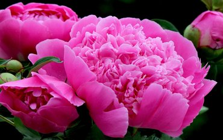

Flowers
Peony (lat. Paeónia) is a genus of herbaceous perennials and deciduous shrubs (tree-like peonies). The only genus of the Peony family (Paeoniaceae), previously the genus was assigned to the ranunculaceae family (Ranunculaceae).
Peonies bloom in late spring and are valued by gardeners for their lush foliage, showy flowers, and ornamental fruits (in some species).

Tulip (lat. Túlipa) is a genus of perennial herbaceous bulbous plants of the Liliaceae family, which in modern taxonomy includes more than 80 species.
The center of origin and the greatest diversity of tulip species are the mountains of northern Iran, Pamir-Alay and Tien Shan. For 10-15 million years of evolution, tulips settled to Spain and Morocco in the west, to Transbaikalia in the east and to the Sinai Peninsula in the south. In the north, human-introduced populations of the wood tulip have reached Scotland and the southern coast of Scandinavia.
Chamomile (lat. Matricaria) is a genus of annual flowering plants of the Aster family, or Compositae (Asteraceae), according to the modern classification, unites about 70 species of low odorous herbs that bloom from the first year of life.
The most famous species is Chamomile (Matricaria chamomilla, syn. Matricaria recutita), this plant is widely used for medicinal and cosmetic purposes.
Rosa is the collective name for species and varieties of representatives of the genus Rosehip (lat. Rósa), grown by humans and growing in the wild. Most of the varieties of roses are obtained as a result of long-term selection through repeated crosses and selection. Some varieties are forms of wild species.